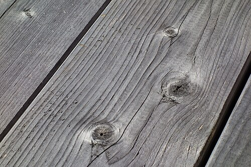
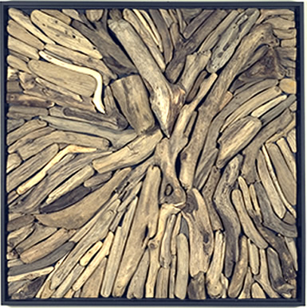
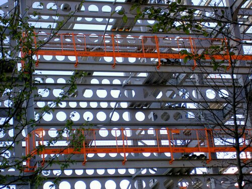
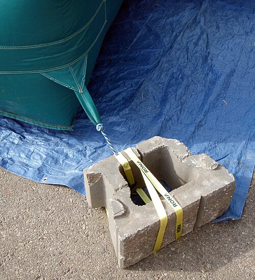
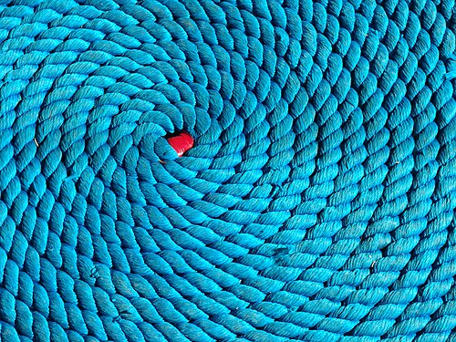
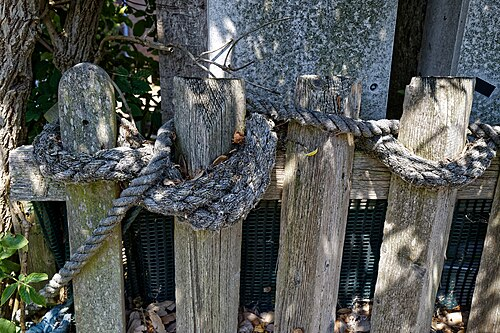
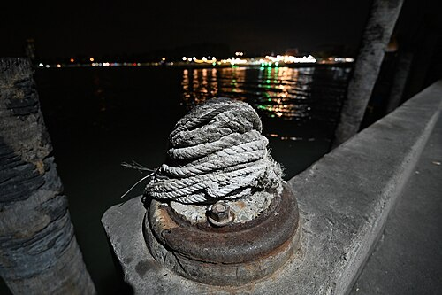
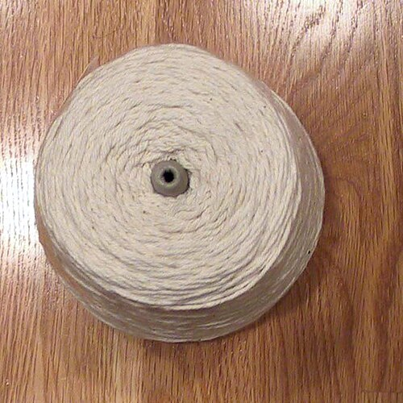
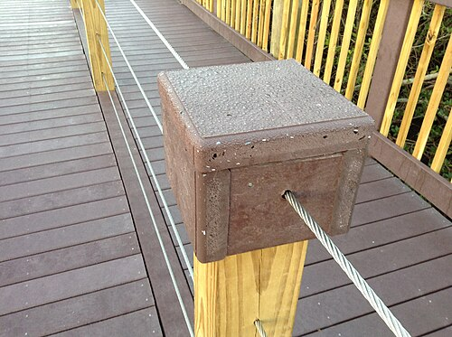
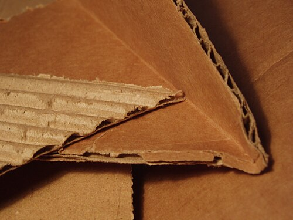

File:Weatherworn planks on top of wooden table.jpg
作者：W.carter
授權：CC0
原始來源與完整授權照片為外觀示意，卡片上的回收狀態與結構條件屬遊戲設定。縮圖以裁切方式顯示；原始檔案未修改。木槌與森林背景由使用者提供。

作者：W.carter
授權：CC0
原始來源與完整授權
作者：Recordsetter23
授權：CC BY 3.0
原始來源與完整授權
作者：Steve F
授權：CC BY-SA 2.0
原始來源與完整授權
作者：Sergei S. Scurfield
授權：CC BY-SA 3.0
原始來源與完整授權
作者：Nevit Dilmen
授權：CC BY-SA 3.0
原始來源與完整授權
作者：Acabashi
授權：CC BY-SA 4.0
原始來源與完整授權
作者：PattayaPatrol
授權：CC BY-SA 4.0
原始來源與完整授權
作者：Kris Miller from Issaquah
授權：CC BY 2.0
原始來源與完整授權
作者：Shanemurphy22
授權：CC BY-SA 4.0
原始來源與完整授權
作者：Richard Wheeler (Zephyris)
授權：CC BY-SA 3.0
原始來源與完整授權